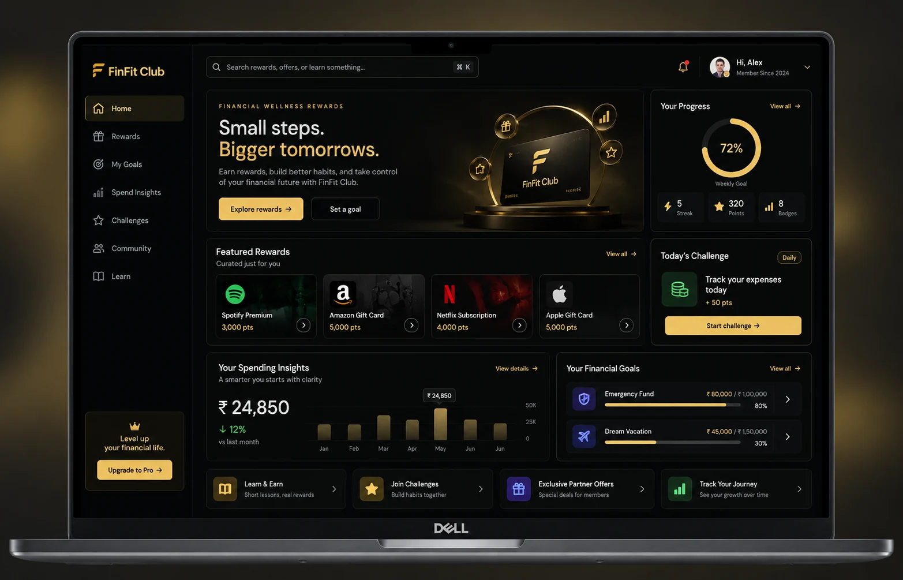
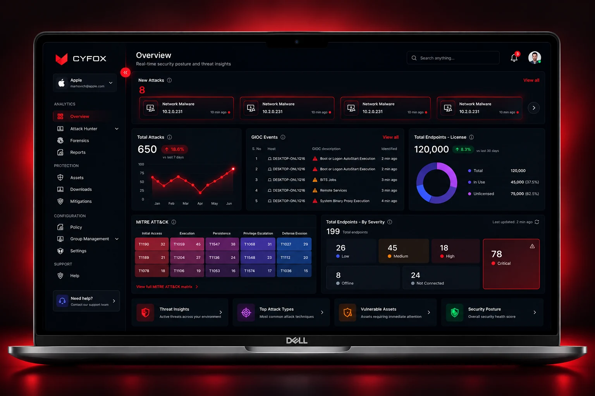
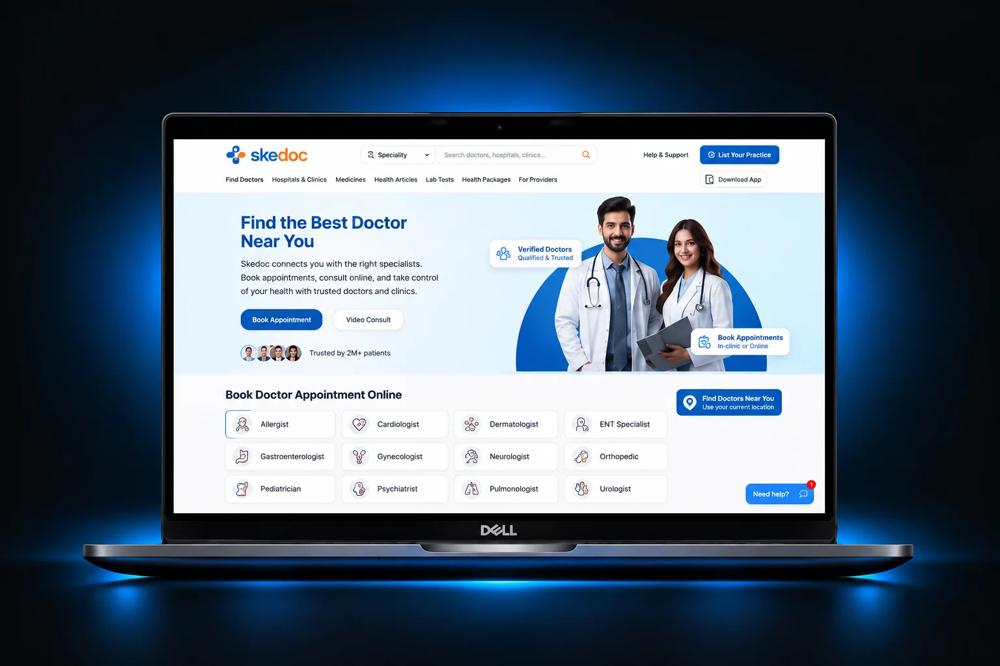
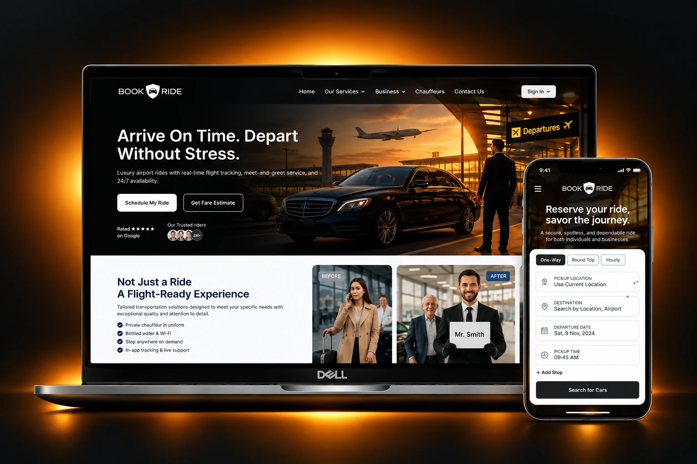
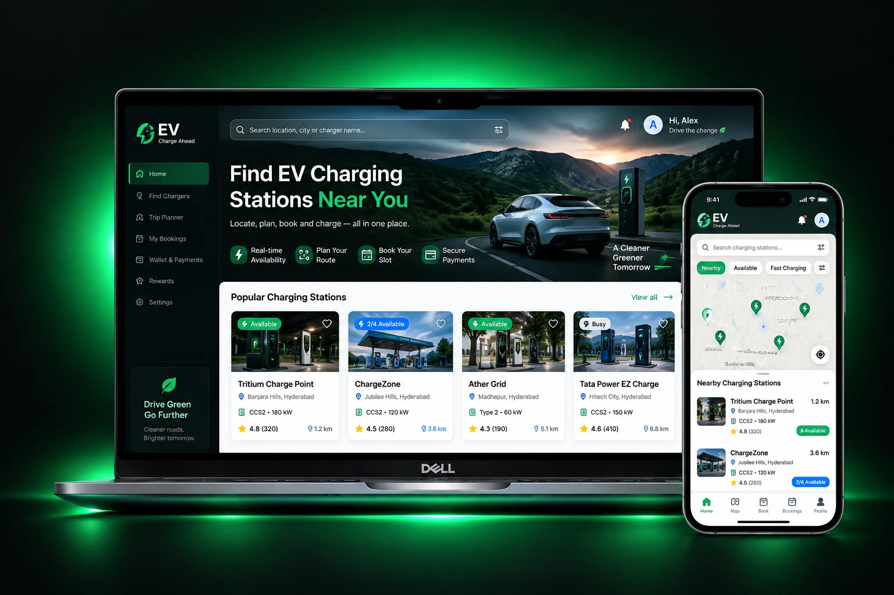
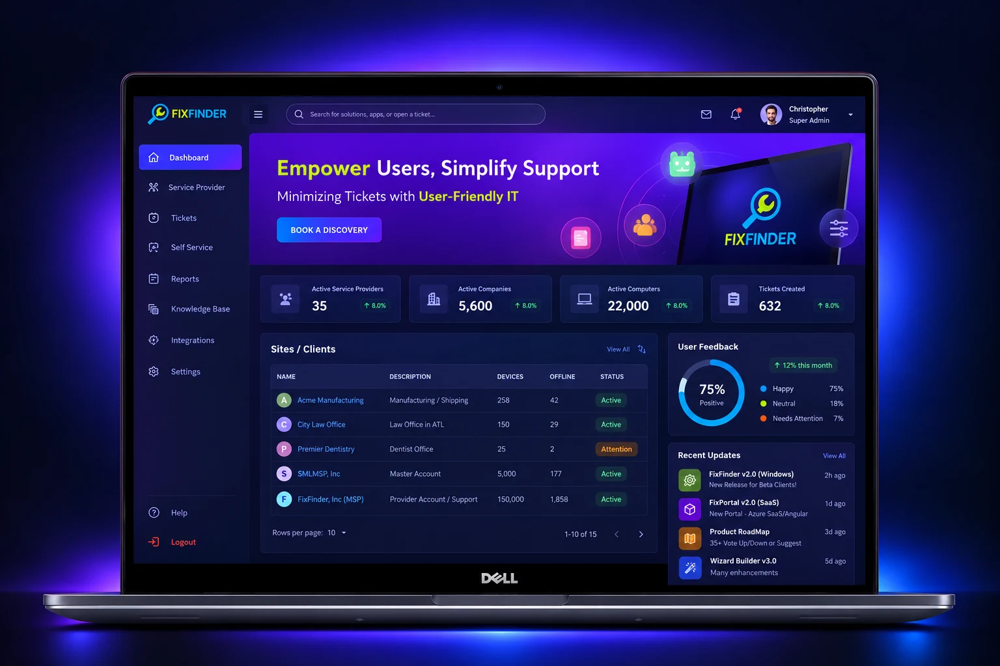

Capture the request, user goal and relevant context.
SENIOR PRODUCT DESIGNER · AI
AGENTS · AUTOMATION · DESIGN SYSTEMS
HELLO, I'M LAXMINARAYANA
Designing
AI Products.
Building
Experiences.
AI Product Design · Agent Experiences · Workflow Automation
I design intuitive AI-powered products and agent-driven workflows — combining human-centred UX, automation thinking, AI-assisted prototyping, reusable design systems and frontend implementation.
13+YEARS IN SOFTWARE
9+YEARS IN PRODUCT DESIGN
UX × UI × DEVUX × AI × AGENTS
AI AGENTS & PRODUCT DESIGN / 2026AVAILABLE FOR OPPORTUNITIES
DESIGN FOR PEOPLE.BUILD WITH INTELLIGENCE.
Good design makes complexity feel simple.
AI PRODUCT DESIGN ✳ AI AGENTS ✳ WORKFLOW AUTOMATION ✳ DESIGN SYSTEMS02 / SELECTED WORK
Products made
for real problems.
A selection of AI, enterprise, fintech, healthcare and mobility experiences — from product discovery through prototyping and design delivery.
VIEW CASE STUDY ↗
01 / ENTERPRISE AI · SEARCH
Enquire AI
Making enterprise knowledge easier to discover and use.
VIEW PROJECT ↗02 / FINTECH · REWARDS
FinFit Club
A clearer financial engagement experience.
VIEW PROJECT ↗03 / CYBERSECURITY · SAAS
CYFOX
Making complex security workflows easier to operate.
VIEW PROJECT ↗04 / HEALTHCARE · MOBILE
Skedoc
Doctor discovery and appointment booking journeys.
VIEW PROJECT ↗05 / MOBILITY · BOOKING
Book A Ride
Connected travel and chauffeur booking experiences.
VIEW PROJECT ↗06 / EV · MOBILITY
EV Station Finder
From charging discovery to trip planning.
VIEW PROJECT ↗07 / ENTERPRISE · WORKFLOWS
FixFinder
A scalable self-service IT support experience.03 / AI AGENTS & WORKFLOW AUTOMATION
Designing agents
people can trust.
I explore how AI agents can understand intent, work with context, coordinate multi-step tasks and involve people at the right moments. My focus spans agent experience design, workflow automation and AI-assisted product prototyping.
AGENT WORKFLOW / CONCEPTUAL MODEL
HUMAN-LED · AI-ASSISTED
Break work into steps and select the appropriate capability.
Present tool, task and progress states with clear feedback.
Request approval, allow correction and escalate exceptions.
Conceptual product-design model to explain my approach — not a claim that every stage is deployed as a live production agent.
01 PRODUCT CONCEPT
KAILASHA AI
AI WORKFORCE / MULTI-AGENT CONCEPT
Exploring a coordinated AI workforce for business operations, with role-based agent experiences across sales, reception, customer support and internal workflows.
02 AI PRODUCT DESIGN
ENQUIRE AI
ENTERPRISE SEARCH / KNOWLEDGE EXPERIENCE
Designing a conversational way to discover enterprise knowledge, understand responses and move from information to the next action.
03 PROTOTYPING PRACTICE
AI-ASSISTED BUILDING
IDEA → PROTOTYPE → ITERATION
Using AI tools to accelerate ideation, generate interface directions, build clickable or functional prototypes and iterate on product workflows.
AGENT EXPERIENCE DESIGN
INTENT & CONTEXT
WORKFLOW STATES
HUMAN APPROVALS
ESCALATION & OVERSIGHT
AI-ASSISTED PROTOTYPING
The KAILASHA AI area is presented as a product concept and exploration. Live integrations, autonomous execution, deployment scale and outcome metrics are intentionally not claimed here.
04 / DESIGN SYSTEMS
Consistency is
designed. Then scaled.
I use shared foundations and reusable patterns to help teams create coherent experiences across products, platforms and releases.
FOUNDATIONSDESIGN LANGUAGE / V1
COLOR TOKENS
Primary · Accent · Neutral
TYPE SCALE
Ag
Display / Body / Label
SPACING
4 · 8 · 12 · 16 · 24
BUTTON / PRIMARY
INPUT / DEFAULT
Enter your email
STATUS / SUCCESS● Completed
01FoundationsColor, typography, spacing and visual rules.
02Reusable componentsConsistent interface patterns and states.
03Design ↔ developmentSpecifications that make implementation clearer.
Showcase concept based on design-system practices. Specific token documentation and coded library examples should be added from verified project files.
05 / FRONTEND & AI-ASSISTED DEVELOPMENT
From interface
to intelligent products.
My frontend background and AI-tool experience help me prototype AI product ideas, shape agent and automation workflows, understand component constraints and collaborate with engineers using a shared language.
type ButtonProps = {
variant: "primary" | "secondary";
children: React.ReactNode;
};
export function Button({
variant = "primary",
children,
}: ButtonProps) {
return (
<button className={styles[variant]}>
{children}
</button>
);
}DEVELOPMENT & AI TOOLKIT
AI-assisted prototyping · Agent interaction patterns · Workflow automation UX · Component-oriented development · Responsive interfaces · Developer handoff
06 / ABOUT
Curious by nature.
Structured by design.
I’m a product designer with a software-development foundation and hands-on experience using AI tools to explore and prototype product ideas. I work across AI product design, agent experiences, workflow automation, UX strategy, design systems and frontend development — connecting user needs, business goals and technical reality.
13+YEARS SOFTWARE EXPERIENCE
9+YEARS PRODUCT DESIGN
5CORE DOMAINS
Understand the problem.
→Structure the experience.
→Design the system.
→Deliver with engineering.
07 / CONTACT
Have a complex product
worth making simpler?
Let’s talk about AI product design, agent experiences, workflow automation, design systems and building thoughtful digital experiences.
avulalaxminarayana@gmail.com ↗